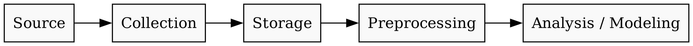

Remark
These lecture notes are in early access and will continue to evolve based on classroom experience and feedback.
1.2. Data Acquisition for NLP#
1.2.1. Learning Objectives#
By the end of this section, you should be able to:
Describe common sources of textual data for NLP (web, APIs, document repositories, logs).
Distinguish between structured, semi-structured, and unstructured text data sources.
Select the right HTML parser (
html.parser,lxml,html5lib) for a given scraping task.Implement basic web scraping workflows with Python using
requestsandBeautifulSoup, including multi-field extraction and result storage.Navigate HTML document trees using tag search, CSS selectors, and attribute filtering.
Explain where OCR fits into an NLP pipeline and understand its key configuration options and limitations.
Identify open repositories that provide NLP-ready text and understand how to search them.
Draft a dataset card to document a corpus you have built.
Articulate ethical, legal, and documentation considerations when collecting text data.
Section Goal
Before you can train a model or run an analysis, you need text data. This section surveys the landscape of textual data sources and teaches you the practical skills to acquire, store, and document a corpus. After completing this section, you will be able to collect raw text from the web, handle scanned documents via OCR, locate ready-made NLP datasets, and document your corpus responsibly with a dataset card.
1.2.2. Why Data Acquisition Matters#
Modern NLP systems are only as good as the text data they are trained and evaluated on. The field has a saying: garbage in, garbage out — no matter how sophisticated your model, it cannot compensate for a corpus that is too small, too noisy, or systematically unrepresentative. High-quality, representative, and well-documented corpora are essential for:
Building robust models that generalize beyond narrow benchmarks.
Supporting domain-specific applications (e.g., clinical NLP, environmental policy analysis, legal text mining).
Enabling reproducible research and fair comparisons between systems.
Detecting and mitigating bias — a corpus that over-represents certain demographics, time periods, or writing styles will produce models that inherit those skews.
In this section we survey practical ways to acquire textual data for your projects, from open government and research repositories to web scraping and document processing.
1.2.2.1. What is a corpus?#
A corpus (plural: corpora) is a structured collection of text assembled for a specific purpose. Corpora vary enormously in size, domain, and format:
A raw corpus contains text with minimal processing — just the strings, perhaps with source metadata.
An annotated corpus adds human-generated labels: part-of-speech tags, named entity spans, sentiment ratings, or coreference chains.
A balanced corpus is designed so that different genres, topics, or demographic groups are proportionally represented.
A domain corpus focuses on a specific field such as biomedical literature, legal filings, or social media posts.
The type of corpus you need depends entirely on the downstream task. For language modeling you want lots of raw text; for named entity recognition you need annotated examples; for evaluating fairness you need balanced coverage across groups.
1.2.2.2. The data pipeline view#
Data acquisition is not a one-time event but the first stage of a repeatable pipeline:
{kind=link}

Fig. 1.2 The standard NLP data acquisition pipeline, illustrating the flow from raw source data to analysis-ready models.#
Decisions made at the collection stage — which sites to scrape, which fields to keep, which documents to exclude — propagate downstream and are often invisible unless you document them carefully.
1.2.3. Sources of Textual Data#
At a high level, most NLP corpora originate from one or more of the following source categories:
Source type |
Examples |
Typical format |
|---|---|---|
Web content |
News sites, blogs, forums, documentation, wikis |
HTML |
APIs and data services |
Social media APIs, scholarly APIs, open-data APIs |
JSON / XML |
Document repositories |
PDFs, Word files, institutional reports |
PDF / DOCX |
Logs and conversational platforms |
Chat transcripts, customer support, issue trackers |
Plain text / JSON |
Specialized NLP repositories |
GLUE, SQuAD, IMDB, Common Crawl |
Various |
The challenge is not only to obtain text, but to do so responsibly and in a way that preserves relevant structure (e.g., headings, metadata, document boundaries).
1.2.3.1. Structured vs. semi-structured vs. unstructured text#
Before collecting data it helps to understand what you are dealing with:
Structured text has a rigid, machine-readable schema. A CSV file where one column contains product reviews and another contains star ratings is structured: every row has the same fields. Structured text is the easiest to process but the most constrained.
Semi-structured text has some organization but does not conform to a fixed schema. HTML is the canonical example: pages share a tag vocabulary but the hierarchy and content vary wildly across sites. JSON from an API is another example — the keys are predictable but nested objects can appear or disappear.
Unstructured text is free-form prose with no imposed schema: novels, scientific articles, email threads, transcribed speech. Most NLP targets unstructured text precisely because it is so abundant and rich.
In practice, your pipeline will often move text from semi-structured (HTML) to unstructured (plain text) by stripping tags, and then later impose structure (annotations) on top of that plain text.
1.2.4. Web Scraping: Turning HTML into Text#
Web pages are one of the most common sources of text for NLP. However, the text we care about is usually embedded inside HTML structure — tags, attributes, navigation links, ads, and cookie banners. Our goal is to extract the content we need while respecting the website’s rules and avoiding unnecessary noise.
1.2.4.1. A brief primer on HTML#
If you have seen HTML before, feel free to skim this. If not, here is the minimum you need.
HTML (HyperText Markup Language) is the language browsers use to render web pages. It consists of nested elements, each bounded by an opening and closing tag:
<p class="lead">This is a paragraph with a <a href="https://example.com">link</a>.</p>
Key concepts:
A tag is a keyword in angle brackets:
<p>,<a>,<div>,<span>,<h1>, etc.An attribute is a key-value pair inside the opening tag:
class="lead",href="...",id="main".The class and id attributes are especially important for scraping because web developers use them to style elements — and you can use them to target elements.
The DOM (Document Object Model) is the tree structure that results from parsing HTML. Scraping libraries let you walk this tree.
A scraper’s job is to parse this tree and extract the text nodes you care about, discarding everything else.
1.2.4.2. The requests library#
Before you can parse HTML you need to fetch it. The requests library handles HTTP for you:
200
text/html
timeout=10 is important: without it, a slow server can hang your program indefinitely. Always set a timeout.
The raise_for_status() call converts HTTP error codes into Python exceptions so you can catch them cleanly with try/except.
1.2.4.3. Choosing the right parser#
BeautifulSoup supports several HTML parsers. The choice of parser affects how the library handles malformed HTML and can subtly change which elements it finds.
Parser |
Speed |
Handles Bad HTML |
Requires Install |
|---|---|---|---|
|
Medium |
Moderate |
No (built-in) |
|
Fast |
Good |
Yes |
|
Slow |
Excellent |
Yes |
html.parser— Part of the Python standard library; good for simple scraping tasks and learning environments.lxml— Written in C; best for high-volume scraping and performance-critical applications.html5lib— Parses HTML exactly as a browser would; best when dealing with heavily malformed or legacy HTML.
Selection guide
Start with lxml for speed; fall back to html5lib if you encounter parsing errors on poorly formatted pages. For coursework and quick experiments, html.parser works fine and requires no installation.
1.2.4.4. Setting up the scraping environment#
pip install beautifulsoup4 requests lxml html5lib
1.2.4.6. Example: scraping article titles#
1. Ratty – A terminal emulator with inline 3D graphics
2. Training an LLM in Swift, Part 1: Taking matrix mult from Gflop/s to Tflop/s
3. Hardware Attestation as Monopoly Enabler
4. Gmail registration now requires scanning a QR code and sending a text message
5. Nullsoft, 1997-2004 AOL kills off the last maverick tech company (2004)
6. Amália and the Future of European Portuguese LLMs
7. Local AI needs to be the norm
8. Venom and Hot Peppers Offer a Key to Killing Resistant Bacteria
9. Driver accused of DUI tracks missing laptop to Illinois State trooper's house
10. Building a web server in aarch64 assembly to give my life (a lack of) meaning
In your labs, you will adapt this pattern to scrape other sites (e.g., GitHub trending repositories, world population tables, documentation pages), paying particular attention to:
Locating relevant content with browser developer tools.
Designing CSS selectors that are robust to small layout changes.
Respecting
robots.txt, rate limits, and the website’s terms of service.Avoiding brittle assumptions (e.g., exact tag order, class names) where possible.
1.2.4.7. Checking robots.txt before scraping#
Before scraping any site, you should check its robots.txt file to understand which paths are off-limits to automated crawlers. This file lives at the root of every domain (e.g., https://example.com/robots.txt) and follows a simple syntax:
User-agent: * # applies to all bots
Disallow: /private/ # do not crawl URLs starting with /private/
Crawl-delay: 5 # wait 5 seconds between requests
Python makes checking this straightforward:
BLOCKED https://en.wikipedia.org/wiki/Flood
BLOCKED https://en.wikipedia.org/w/index.php?search=flood
Best practice
Always check robots.txt and the site’s Terms of Service before scraping. Respecting crawl rules is both legally and ethically important. Many sites that prohibit scraping still provide official data APIs — prefer those when they exist.
1.2.4.8. Example: scraping a Wikipedia article#
Wikipedia is a widely used source of NLP text. Its articles follow a predictable HTML structure and are licensed under Creative Commons, making them appropriate for non-commercial research.
Title : Natural language processing
URL : https://en.wikipedia.org/wiki/Natural_language_processing
Lead : Natural language processing(NLP) is the processing ofnatural languageinformation by acomputer. NLP is a subfield ofcomputer scienceand is closely associated withartificial intelligence. NLP is also related toinformation retrieval,knowledge representation,computational linguistics, andlinguisticsmore ...
Sections: ['Contents', 'History', 'Symbolic NLP (1950s – early 1990s)', 'Statistical NLP (1990s–present)', 'Approaches: Symbolic, statistical, neural networks', 'Statistical approach']
What is a User-Agent?
Every HTTP request includes a User-Agent header that identifies the software making the request. Browsers send strings like Mozilla/5.0 (Windows NT 10.0; Win64; x64) .... If you send no User-Agent, some servers will block you immediately. Sending a descriptive, honest User-Agent (with contact info) is both polite and practical — it helps server administrators understand who is accessing their site and reach you if there is a problem.
This pattern is easy to extend: loop over a list of article titles to build a small corpus, save results as JSONL, and use the lead field as short document summaries for downstream classification or clustering.
1.2.4.9. Storing scraped data: JSON and JSONL#
When you scrape multiple documents, you need a format that preserves both the text and its metadata. Two common choices are:
JSON — stores a Python list of dicts in a single file. Easy to read, but you must load the whole file to add new records:
JSONL (JSON Lines) — one JSON object per line. Append-friendly and easy to stream, which matters when corpora are too large to fit in memory:
For large corpora (millions of documents), you would graduate to a database (SQLite for local work, PostgreSQL for team projects) or a dedicated data format like Parquet. For the scale of this course, JSON/JSONL is sufficient.
1.2.4.10. Building a complete multi-field scraping pipeline#
For many NLP tasks, titles alone are not enough. You may want full article text, author names, publication dates, and section headings. The typical workflow is:
Scrape a listing page to collect links to individual articles.
For each link:
Download the article page.
Identify the main content container.
Extract the text, removing boilerplate like navigation or footers.
Store results in a structured format with fields such as
url,title,date,body, andtags.Insert a polite delay between requests so you do not overload the server.
Fetching listings from: https://en.wikipedia.org/wiki/Category:Natural_language_processing
Scraping: Natural language processing...
Scraping: Outline of natural language processing...
Scraping: Abdul Majid Bhurgri Institute of Language Engineering...
Scraping: ACL Data Collection Initiative...
Scraping: Adversarial stylometry...
Successfully saved 5 articles to 'corpus.json'.
Why time.sleep()?
Sending dozens of requests per second to a server is called a crawl flood and can degrade service for other users or get your IP address banned. A polite crawler waits at least 1–5 seconds between requests — or respects the Crawl-delay directive in robots.txt. The time.sleep(1) call above is a minimal courtesy; for production crawlers, implement exponential backoff so that errors automatically trigger longer waits.
Libraries like newspaper3k or trafilatura can automate boilerplate removal, but you should always inspect their output and perform quality checks — automatic extractors are not perfect and may miss domain-specific content or include unwanted noise.
1.2.5. APIs and Streaming Data#
Some platforms explicitly expose their data via APIs (Application Programming Interfaces) rather than relying on scraping. An API is a contract: the provider defines structured endpoints (URLs), and you query them with parameters to receive structured responses (usually JSON). This is almost always preferable to scraping when an API is available, because:
The data is cleaner and better structured (no HTML to strip).
You are working within the provider’s rules, not around them.
API responses are versioned and more stable than HTML layouts.
Common API patterns relevant to NLP:
Social platforms provide APIs for accessing posts, comments, and metadata (often with authentication and rate limits).
News APIs (e.g., NewsAPI, GDELT) aggregate articles across sources and return clean JSON.
Open-data APIs (e.g., Data.gov, World Bank) expose structured datasets with textual fields such as descriptions, titles, and comment fields.
Scholarly APIs (e.g., Semantic Scholar, CrossRef, PubMed Entrez) provide abstracts, titles, and full-text links for academic literature.
1.2.5.1. Anatomy of an API request#
Most REST APIs follow this pattern:
The Unexpected Way Hurricanes Are Fueling Wildfires
Hurricane-scarred portions of the Southeast are battling raging wildfires. These two weather extremes are more connected than you think.
---
Pentagon Think Tank Tests Ingenious Plan to Protect Coasts From Hurricanes—and It’s Working
After Hurricane Michael laid waste to Tyndall Air Force Base, DARPA turned to a common bivalve for assistance.
---
Get Ready for More Brain-Scanning Consumer Gadgets
Neurable, which makes noninvasive brain-computer interfaces, is licensing its technology and promises a “flood” of new third-party hardware this year and next.
---
Kyle, Teddy, and Nana: Here's what hurricanes will be named in 2026
The National Hurricane Center chooses storms' names in advance. This year's list of hurricane names includes Arthur, Dolly, Leah, and Wilfred.
---
Thousands at risk after multi-million dollar Everest flood warning system left to rust
The flood warning system at Imja glacial lake has not been maintained since 2016, fearful locals tell BBC.
---
I loved living in Florida. The natural disasters and constant flooding drove me out.
After enduring back-to-back hurricanes in 2024, Lorraine English knew she had to leave Florida. She moved to Asheville, North Carolina, and is happier.
---
The 15 costliest US hurricanes of the 21st century, ranked
Hurricanes have only become more dangerous — and expensive — over the last 26 years.
---
Boy, 8, showered with gifts after calming plane passenger with singing and football cards
Phoenix has been sent gifts from as far away as Germany after his actions prevented the flight being diverted.
---
These 2 Florida cities considered 'overdue' for direct hurricane hits
It’s been over 100 years since a hurricane hit Tampa, and 34 since Miami saw a direct impact. Some forecasters consider both cities “overdue.”
---
These 3 places are way 'overdue' for a direct hit from a hurricane
Several locations along the East Coast have been enjoying a lengthy "hurricane hiatus." That worries some forecasters.
---
response.json() is equivalent to json.loads(response.text) and is the idiomatic way to parse a JSON API response.
1.2.5.2. Pagination and rate limits#
Most APIs do not return all results at once. They use pagination: each response includes a page of results and a way to request the next page. Common patterns:
Offset/limit: add
?page=2&per_page=100to your URL.Cursor-based: the response includes a
next_cursortoken you pass in the next request.
APIs also enforce rate limits — a maximum number of requests per minute or per day. Exceeding the limit returns a 429 Too Many Requests error. Always implement retry logic with exponential backoff when working with APIs at scale.
While we do not dive deeply into specific APIs in this chapter, the same principles of responsible collection and documentation apply to all of them.
1.2.6. OCR and Scanned Documents#
Not all text is born digital. Reports, forms, books, and historical documents are often only available as scanned PDFs or images. Optical Character Recognition (OCR) bridges this gap by converting images of text into machine-readable strings.
1.2.6.1. How Tesseract works#
Tesseract — the most widely used open-source OCR engine — processes images through an internal pipeline:
Binarization — convert the image to black and white (thresholding separates text pixels from background).
Page layout analysis — detect text blocks, columns, and lines using connected component analysis.
Line and word detection — segment individual words within each line.
Character recognition — an LSTM neural network classifies each character sequence.
Language model — apply dictionary and n-gram constraints to resolve ambiguous characters (e.g., distinguishing
l,1, andI).
Understanding this pipeline helps you target the right preprocessing step for each type of image degradation. If your images are clean but skewed, fix the skew. If they are noisy, denoise before binarization.
1.2.6.2. Common OCR challenges#
Challenge |
Description |
Mitigation |
|---|---|---|
Low resolution |
Small or blurry text |
Upscale with |
Noise and artifacts |
Scanning artifacts confuse the engine |
Median blur, Gaussian blur |
Uneven lighting |
Shadows cause inconsistent binarization |
CLAHE, adaptive thresholding |
Skewed text |
Tilted documents misalign character baselines |
Deskew preprocessing |
Complex layouts |
Multi-column text, tables, mixed content |
ROI cropping, custom |
Non-standard fonts |
Decorative or handwritten text |
EasyOCR, fine-tuned models |
1.2.6.3. What is DPI?#
DPI (dots per inch) is a measure of image resolution: how many pixels are packed into one inch of the scanned document. Tesseract is trained on images at 300 DPI. Feeding it a 72 DPI scan (typical of screen captures) will produce much worse results. When scanning documents yourself, always scan at 300 DPI or higher.
1.2.6.4. Example: basic OCR with Tesseract#
----------------------------------------
OCR Output (first 500 chars):
CENTER
FOR THE i hisericdomiom Malioue
January 6-29
Fri & Saturdays at 8
Sandes Matinees at 2 pa
_ Tickets: 723-8698
| www.henegar.org pres rama tard
1.2.6.5. Key Tesseract configuration options#
Tesseract exposes two important families of flags passed via the config parameter:
OCR Engine Mode (--oem) — controls which recognition engine to use:
Value |
Engine |
|---|---|
|
Legacy engine only |
|
LSTM neural network only |
|
Legacy + LSTM combined |
|
Default — use best available |
Page Segmentation Mode (--psm) — tells Tesseract how to interpret the page layout:
Value |
Interpretation |
|---|---|
|
Fully automatic page segmentation (default) |
|
Single uniform block of text |
|
Sparse text — find as much text as possible |
|
Sparse text with OSD (orientation/script detection) |
ete i
* si i ‘0 a
f bf :
ad :
fees *
wr: LENT | |
4 : A eal fe gh #| he ; 4
CR). |
| ie \% p men Music a iy Do Ee !
io mye’ * =’ * a .
> < UR (
January 6-29 Bi
S teams | fl
Tickets:
» $20 & $22 723° 8698
| Wwww.henegar.org fs 1 hemmed biedaniod 5
ge os
Getting detailed confidence scores
pytesseract.image_to_data() returns a pandas-friendly DataFrame with per-word confidence scores, bounding boxes, and line numbers. This is useful when you want to filter out low-confidence words (e.g., confidence < 60) before downstream processing.
import pytesseract
import pandas as pd
data = pytesseract.image_to_data(image, output_type=pytesseract.Output.DATAFRAME)
# Filter to words with confidence above 60
confident = data[data["conf"] > 60]
print(confident[["word_num", "text", "conf"]].head(20))
When using OCR in NLP workflows, be mindful of:
Document layout: multi-column text, tables, headers, and footnotes can confuse OCR engines.
Image quality: low resolution, poor contrast, skew, and noise all degrade accuracy.
Post-processing: spell correction, de-hyphenation, line joining, and paragraph segmentation can substantially improve downstream usability.
OCR is often the first step in building corpora from archival or domain-specific documents (e.g., environmental impact reports, scanned health records, historical newspapers).
1.2.7. Open Repositories with NLP-Ready Text#
Many institutions and companies host open datasets that already contain rich textual material. These resources can be repurposed for tasks such as classification, information extraction, or topic modeling.
1.2.7.1. Government and international organizations#
Data.gov (United States): Thousands of datasets including legislative documents, policy reports, and regulatory text.
U.S. Census Bureau: Survey instruments, metadata, and technical documentation suitable for question-answering tasks.
Open government portals (Canada, UK, Australia, and others): Reports, consultations, and official publications in addition to numeric indicators.
European Data Portal / data.europa.eu: EU-wide open datasets, many with multilingual text.
1.2.7.2. Academic and research repositories#
UCI Machine Learning Repository: Many datasets include textual fields (news headlines, reviews, abstracts) for classification and sentiment analysis.
Harvard Dataverse, Borealis, OSF, Figshare, Zenodo: General-purpose repositories where researchers deposit data, including codebooks, survey instruments, and narrative reports.
Linguistic Data Consortium (LDC): Authoritative source for annotated corpora (Penn Treebank, Gigaword, etc.) — most require institutional membership.
1.2.7.3. Technology platforms and NLP-specific collections#
Hugging Face Datasets is currently the largest open collection of ready-to-use NLP datasets, accessible via the datasets Python library:
from datasets import load_dataset
# Load a well-known benchmark dataset
dataset = load_dataset("imdb")
print(dataset)
# Inspect a few samples
for example in dataset["train"].select(range(3)):
label = "positive" if example["label"] == 1 else "negative"
print(f"[{label}] {example['text'][:120]}...")
The datasets library handles downloading, caching, and format conversion automatically. It also provides a standard DatasetDict interface with train/validation/test splits.
Other notable collections:
Google Dataset Search (
datasetsearch.research.google.com): Meta-search engine for datasets across the web; useful for discovering corpora in specific domains.Common Crawl (
commoncrawl.org): A petabyte-scale monthly snapshot of the public web, used to pre-train GPT, BERT, and many other large language models. Processing it requires cloud infrastructure.AWS, Google Cloud, and Azure open-data programs: Public datasets accessible from cloud environments for large-scale experiments.
Project Gutenberg (
gutenberg.org): Over 70,000 public-domain books in plain text — a common source for language modeling and stylometry.
1.2.7.4. Choosing a dataset: questions to ask#
Before adopting a dataset for your project, ask:
What is the license? Can you use it for your purpose (academic, commercial)?
When was it collected? Language evolves; a 2010 Twitter corpus may not reflect 2024 usage.
Who is represented? Does the corpus over-represent certain demographics, geographies, or writing styles?
How was it annotated? Who were the annotators, and what guidelines did they follow?
What is the inter-annotator agreement? High disagreement on labels means noisy supervision.
Has it been audited for harmful content? Many large web-scraped corpora contain toxic text.
1.2.8. Documenting Datasets: Dataset Cards#
As corpora grow larger and more complex, it becomes increasingly important to document them. A dataset card is the NLP community’s standard for this documentation. It serves several purposes:
Helps others (including your future self) understand what the data contains and how to use it.
Surfaces potential biases and limitations before they cause problems in a deployed system.
Satisfies requirements for reproducible research publication.
Demonstrates responsible data stewardship.
A dataset card typically includes:
Section |
What to document |
|---|---|
Purpose |
What task or research question the corpus supports |
Sources |
Where the text comes from (URLs, archives, institutional sources) |
Collection method |
How data was gathered (scraping, API, manual download) |
Preprocessing |
Cleaning and filtering steps applied |
Size |
Number of documents, tokens, languages |
Limitations & biases |
Known gaps, skews, or risks |
License |
How the data may be used |
Citation |
How to credit the dataset in publications |
1.2.8.1. Example dataset card#
Dataset Card: Flood News Corpus
Purpose: Corpus of English-language news articles about flood events (2020–2025) used for studying risk communication in environmental journalism.
Sources: Articles scraped from [Site A] and [Site B]; all pages were publicly accessible and robots.txt-compliant at the time of collection.
Collection: Scraped with requests / BeautifulSoup; articles selected if the headline contained any of: “flood”, “inundation”, “river level”, “evacuation”.
Preprocessing: HTML removed; boilerplate (navigation, ads) filtered via heuristic rules; duplicates removed by URL deduplication.
Size: 12,450 articles; ~8.2M tokens; English only.
Limitations: Only covers English-language sources; geographic representation skewed toward North America and Western Europe; articles from paywalled outlets excluded.
License: Academic / non-commercial use only; comply with each source’s terms of service.
Citation: [Author, Year] “Flood News Corpus v1.0”, [Repository URL].
Thoughtful documentation not only supports reproducibility and responsible use, but also helps you reason about where your models might fail.
1.2.9. Ethics, Licensing, and Documentation#
Regardless of where your text data comes from, responsible NLP practice requires attention to:
1.2.9.1. Licensing and terms of use#
Ensure you have permission to collect, store, and analyze the text. Some sites prohibit scraping or restrict commercial use explicitly in their Terms of Service. Common license types you will encounter:
Creative Commons (CC): A family of licenses ranging from fully open (CC-BY) to more restrictive (CC-BY-NC-ND). Many Wikipedia and government texts use CC licenses.
Open Data Commons (ODC): Licenses designed specifically for datasets.
Custom terms of service: Many platforms (Twitter/X, Reddit, Stack Overflow) have their own rules that may allow research use but prohibit redistribution.
When in doubt, contact the data owner or consult your institution’s legal team.
1.2.9.2. Privacy and consent#
Avoid collecting sensitive personal information without explicit consent and appropriate safeguards. Be especially careful with:
Social media data: Posts may contain location information, health disclosures, or expressions of distress that users did not intend for research use.
Healthcare and legal text: Subject to strict regulations (HIPAA in the US, GDPR in Europe) even when publicly posted.
Minors: Extra caution is warranted when collecting data that may include content created by people under 18.
1.2.9.3. Bias and representation#
Consider whose language is represented in your corpus and whose is missing. Data collection choices can systematically exclude certain communities or perspectives:
A corpus of news articles will over-represent the writing styles and perspectives of professional journalists.
A corpus scraped from English-only websites will underrepresent non-English speaking communities even for topics that affect them.
Historical corpora will reflect the social norms and biases of the period in which they were written.
These biases propagate into models trained on the corpus — a model trained on biased data will produce biased predictions.
1.2.9.4. The right to be forgotten#
Some jurisdictions (notably the EU under GDPR) give individuals the right to have their personal data deleted. If your corpus contains identifiable personal data scraped from the web, you may need to handle deletion requests. Building with anonymization in mind from the start is simpler than retrofitting it later.
Key Takeaways
Text data comes from many sources: web pages, APIs, scanned documents, and curated repositories. Each source requires different collection and cleaning strategies.
Text is structured, semi-structured, or unstructured; most NLP works with unstructured text extracted from semi-structured HTML or PDF sources.
BeautifulSoup + requests is the standard starting point for web scraping; choose the HTML parser (
lxmlfor speed,html5libfor malformed HTML) based on the target site.Always inspect
robots.txtand the site’s Terms of Service before scraping. Many sites provide APIs that are preferable to scraping.OCR (via Tesseract / pytesseract) bridges the gap between scanned documents and machine-readable text; preprocessing (deskew, binarize, denoise) and the right
--psmflag materially improve accuracy.Hugging Face Datasets provides a large, curated, easy-to-load collection of NLP benchmarks and corpora.
Dataset cards are the NLP community’s standard for documenting corpora; they capture purpose, sources, preprocessing steps, limitations, and licensing.
Data collection shapes everything downstream: a biased or poorly documented corpus leads to biased, hard-to-interpret models.
1.2.10. Exercises and Discussion#
Corpus design from web sources Choose a topic you care about (e.g., wildfires, public health policy, renewable energy). Outline a plan for constructing a web-based corpus on this topic. Which sites would you target? What pages or sections would you scrape? What metadata would you store alongside the text?
Parser comparison Scrape the same page with
html.parser,lxml, andhtml5lib. Do you get different numbers of elements or different text? Under what circumstances might the choice of parser change your results?Scraping ethics case study Consider a social media platform or online forum. Under what conditions is scraping content ethically acceptable? When might it be harmful? How would your answer change if you were building a public research dataset versus a commercial product?
Dataset card sketch For the corpus you designed in Exercise 1, draft a dataset card. Include sections on intended use, collection process, preprocessing, potential biases, and licensing.
OCR quality investigation Find a scanned PDF (e.g., a government report from a national archive). Run it through Tesseract with different
--psmsettings. How does the output change? What preprocessing steps improve accuracy the most?API vs. scraping trade-offs Pick a data source that offers both a public API and scrapable HTML pages (e.g., Reddit, Wikipedia). List three advantages of using the API and three situations where scraping might still be necessary.